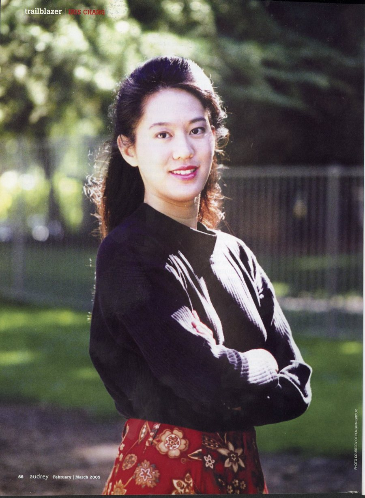
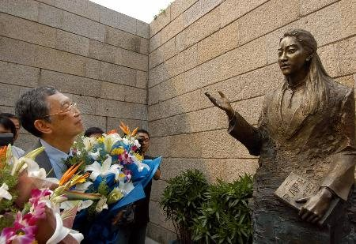
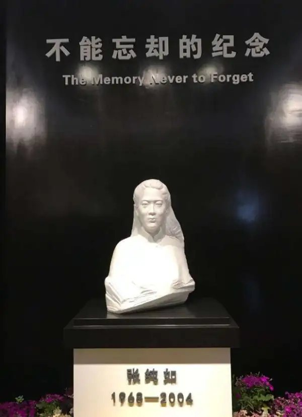

她不是职业历史学家，也不是大屠杀的亲历者。她是一个在美国出生长大的华裔女孩， 用三年时间写成一本书，把一段被西方世界遗忘的浩劫，重新拽回全人类的视野。 36 年人生，她只做了一件事：替沉默的死者说话。

如果你只有一分钟，看完这六张卡片就够了。
1968 年生于美国新泽西州普林斯顿，祖籍江苏淮安。伊利诺伊大学新闻系毕业，约翰·霍普金斯大学写作硕士，曾任美联社、《芝加哥论坛报》记者。
1997 年出版，被哈佛大学历史学家柯比称为「人类史上第一本充分研究南京大屠杀的英文著作」。
出版一个月内打进《纽约时报》畅销书排行榜，被译成至少 7 种语言。南京大屠杀由此进入西方公众的视野。
促成《拉贝日记》公之于世，把《魏特琳日记》带回中国学界；另著有《蚕丝：钱学森传》《美国华人史》。
因这本书遭日本右翼长期骚扰威胁；2004 年为新书调研期间罹患重度抑郁症，11 月 9 日在加州离世。
她一生的信念：相信「一个人的力量」——一个人，可以改变世界。这句话如今刻在以她命名的公园里。
理解张纯如，要先理解她的家庭：一个被战争驱赶、靠学术在美国扎根的华人家庭。
生于四川，童年亲历日军轰炸，「亲眼看到很多同胞死去」。台大物理系第一名，哈佛大学博士，伊利诺伊大学香槟分校物理学教授。2025 年 1 月去世，遵其心愿安葬在女儿墓旁。
生于重庆大轰炸岁月，哈佛大学生物化学博士，微生物学家。女儿离世后，她用七年整理女儿的书信与演讲稿，写成回忆录《张纯如：无法忘却历史的女子》，接替女儿传播历史真相。
1937 年，张纯如的外祖父一家住在南京。城破之前，他带着怀有身孕的妻子和一岁的大女儿逃离——「如果外祖父母没有逃出来，这个世界上就不会有我。」
9 岁那年，纯如第一次听父母讲起南京发生的事。她去公共图书馆查，找不到任何英文资料，又跑去向外祖母和姨妈一一求证，把时间、地点认真记录下来。二十年后，这个女孩写出了那本书。
36 年人生，她留下的东西远比大多数作家一辈子都多。
处女作即为「中国导弹之父」钱学森立传，获美国麦克阿瑟基金会「和平与国际合作计划奖」及国家科学基金会等资助。
世界第一部充分研究南京大屠杀的英文著作。《纽约时报》畅销榜 10 周，译成至少 7 种语言，让西方公众第一次大规模知道「Nanking」。
梳理 150 余年华裔移民史，为千万在美国土地上挣扎过的华人立传——她自己就是其中一员。
1996 年，她在耶鲁大学查到南京安全区国际委员会主席约翰·拉贝的线索，辗转找到其外孙女莱因哈特，促成这部记录日军暴行的日记在纽约公开，轰动国际。面对「这一伟大发现的核心人物」的赞誉，她说：
「莱因哈特夫人和邵子平先生才是关键性的人物，我不过是做了一点力所能及的工作。」
1995 年南京之行，她带去在美国收集的魏特琳日记片段——那是中国学界第一次看到日记内容。她还把上千页美国解密档案（含日本外交文件、东京审判速记录）赠予南京大屠杀研究者。
「受害者、施暴者、第三方见证者」三重视角互证，让真相无可辩驳。
在湾区一场抗战纪念活动上，日军侵华的历史照片让她无法入眠。母亲一句「中国抗战的故事比《飘》更精彩」点燃了她：「我写这本书是出于愤怒。我必须写。」
7 月的南京酷暑中，她走访夏淑琴等幸存者，踏勘屠杀遗址，每天工作十几个小时。离开时，她反把上千页美国档案留给了中国学者。
《拉贝日记》《魏特琳日记》相继浮现——加害者同阵营的德国纳粹党员与美国传教士的亲笔记录，与幸存者的口述彼此印证。
60 周年之际面世，一个月内登上《纽约时报》畅销榜。西方社会第一次大规模知晓：1937 年的南京，超过 30 万人遭屠杀。
书激怒了日本右翼。骚扰电话、恐吓信件接踵而至，她对朋友说自己「一直生活在恐惧中」；日文版出版也一度在压力下搁浅。她没有退缩，继续在公开演讲中要求日本政府正视历史。
为第四本书采访「巴丹死亡行军」幸存战俘期间，沉重题材、连轴工作、儿子确诊自闭症的多重压力压垮了她。重度抑郁症、住院、换药，病情急转直下。11 月 9 日，她在加州自己的车里结束了生命，年仅 36 岁。
遗言中她写：「我曾认真生活，为目标、写作和家人真诚奉献过。」并请家人「记住那个曾经的我，那个作为畅销书作家如日中天的我」。
「外界把纯如的死归因于《南京大屠杀》题材太沉重，这不符合事实——书写完已经 7 年了。她是一个非常坚强的人。」
—— 母亲张盈盈在回忆录《张纯如：无法忘却历史的女子》中的澄清侵华日军南京大屠杀遇难同胞纪念馆内，她的半身铜像落成——手持书卷，立在当年幸存者群像之侧。（图：纪念馆官网）

2005 年 9 月，父亲张绍进亲赴南京为铜像揭幕献花。此后二十年，父母接替女儿传播这段历史，直到 2025 年父亲离世，与女儿葬在一处。（图：新浪新闻）

祖籍地建起张纯如纪念馆，吴为山塑汉白玉像，主题是「不能忘却的纪念 Lest We Forget」。2019 年，加州圣何塞命名「张纯如公园」。（图：纪念馆公开资料）
我写这本书是出于愤怒。我必须写这本书。
—— 张纯如，谈写作《南京暴行》的动机在这件事情上，莱因哈特夫人和邵子平先生才是关键性的人物，我不过是做了一点力所能及的工作。
—— 张纯如，谈《拉贝日记》的发现她单枪匹马，无所畏惧，为那些被历史所遗忘的受害者的公正而战。
—— 母亲张盈盈，《无法忘却历史的女子》我们不想煽动仇恨，而是记住历史、维护和平。
—— 母亲张盈盈，张纯如逝世十周年纪念仪式判断一个人值不值得敬佩，
看她把时间给了谁，把代价付给了什么。
她本可以安安稳稳当畅销书作家，却选了世界上最沉重的题材——为一个自己从未踏足过的城市、一群早已沉默的死者。
她让「Nanking」进入西方公共话语，让《拉贝日记》《魏特琳日记》重见天日；面对威胁没有闭嘴，面对赞誉把功劳让给别人。
她付出了名誉、安宁，最终是健康与生命——却没有活到自己被立像、被命名公园、被一座城市铭记的这一天。
值不值得敬佩，留给你判断。但她相信了一辈子的那句话，如今刻在加州以她命名的公园里：